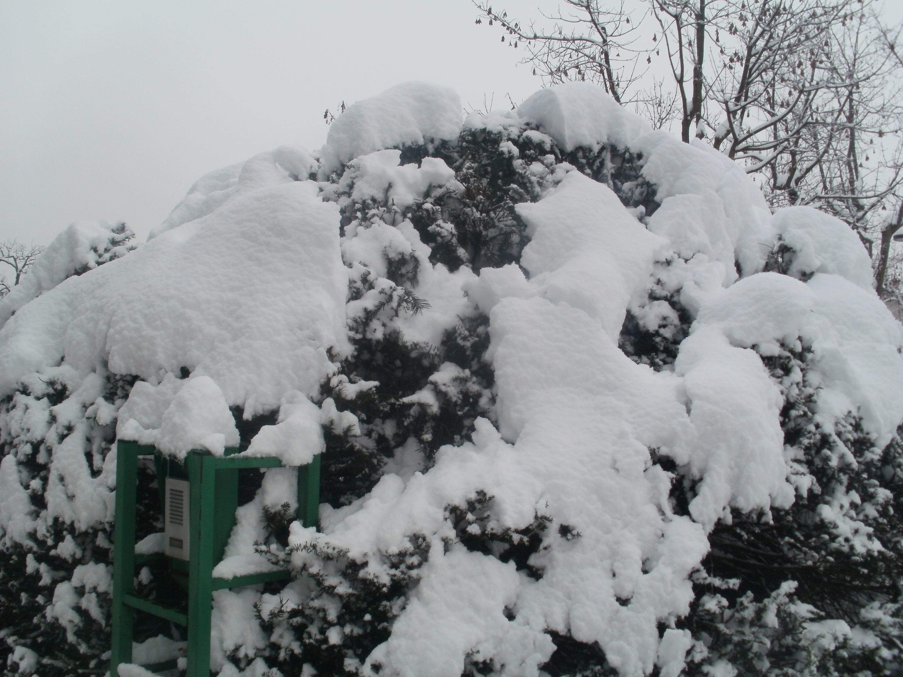
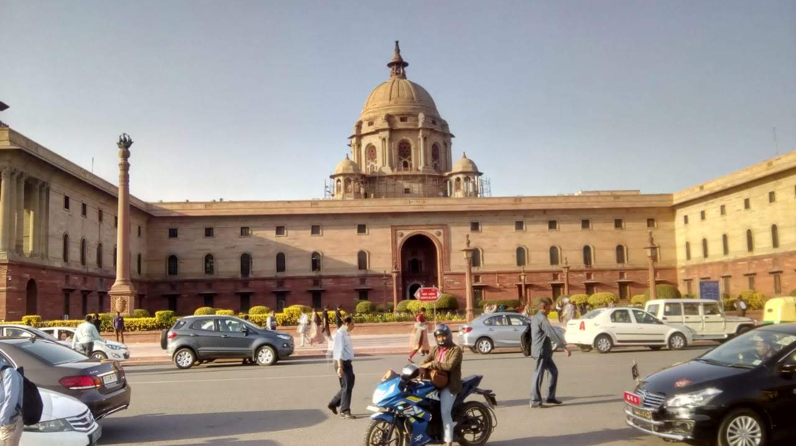
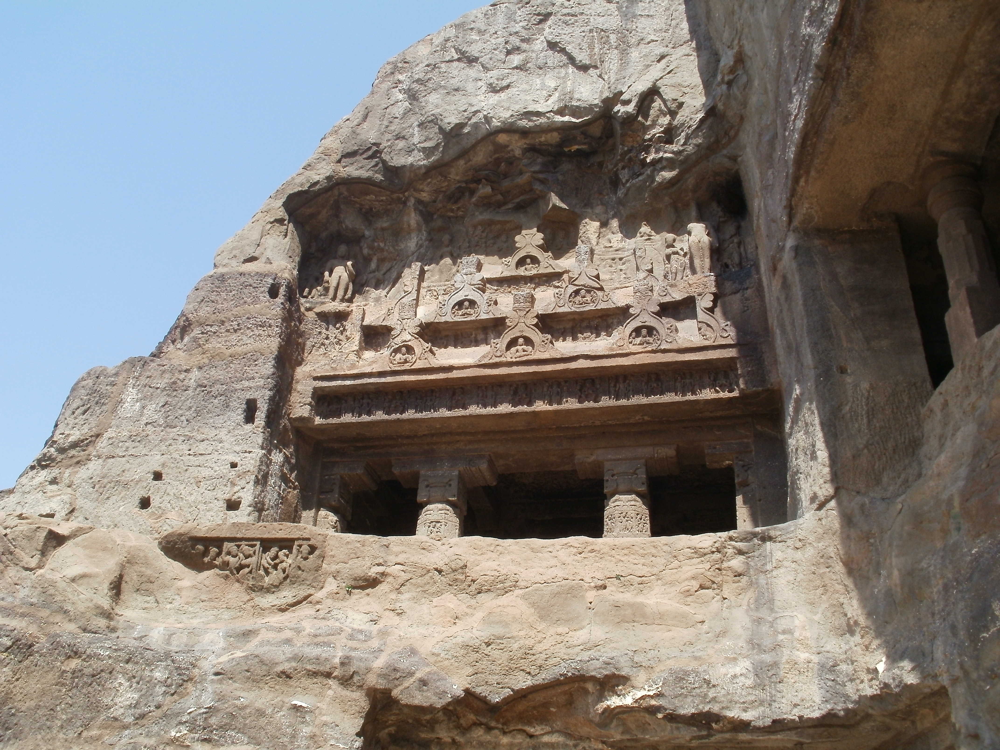
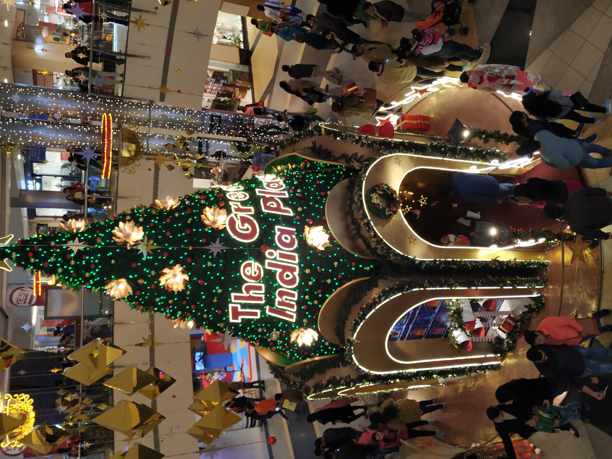

Gallery
#WalkingZombie
Early Mornings but droopy face! Such a foggy day! I remember being grumpy
the whole ride just because I had to wake up at 4 am in the morning for this!
#Baskinginthe"Starlight"
It was a great Christmas evening! We had a lot of fun and food! Ah... Food makes you
forget everything... Anyway, we took this photo in a small cave in the mall where there
were beautiful lights hung in the shape of stars! It was amazing and was a great photo
area!
Abu, the snowman!
My family and I went for a Europe Tour. We went to many places like
Paris,Switzerland,Denmark etc.The place where we stayed for a long time was
Ljubljana. It was our temporary residence. One day, we saw that it was snowing
and decided to make a snowman!
#NotreDame!"
We also visited the great Notre Dame before the Great Incident of 2019. It was
awesome! There were huge, beautiful spires that were aesthetically engineered! There
was also a procession or something going on inside the Notre Dame! It was kind of
boring but still I loved the place!
#ZeGreatEiffelTower!
Ah! Finaly a dream come true! I visited the Eiffel Tower in Paris! It was such
a feast for the eyes! The engineering marvel took my breadth away! It was even
great when we reached the top! I could see the whole city from there! It was a
breathtaking sight!
--More Photos--
   
2021. All rights reserved.